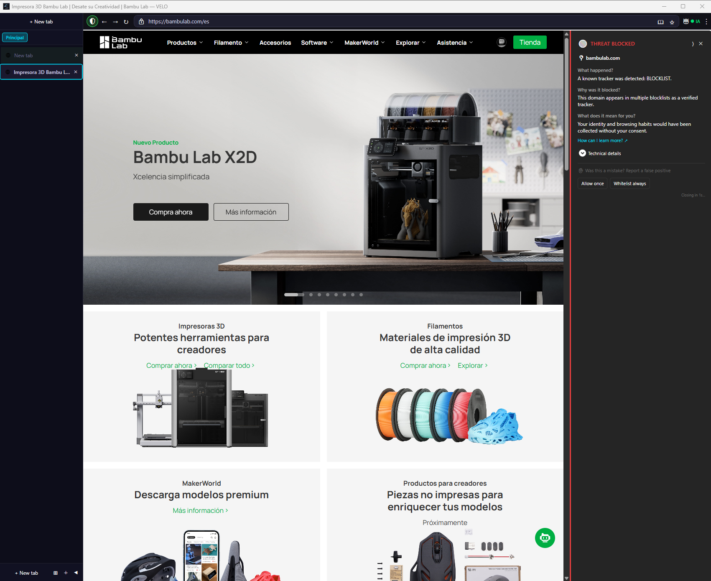
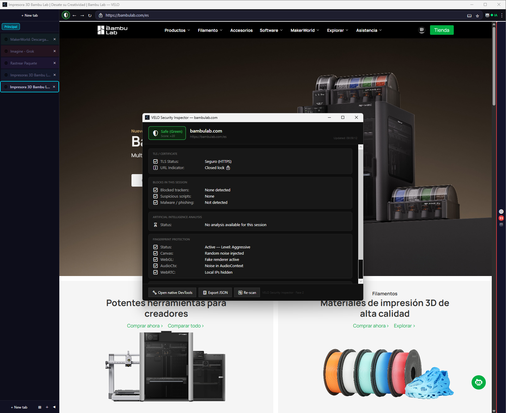
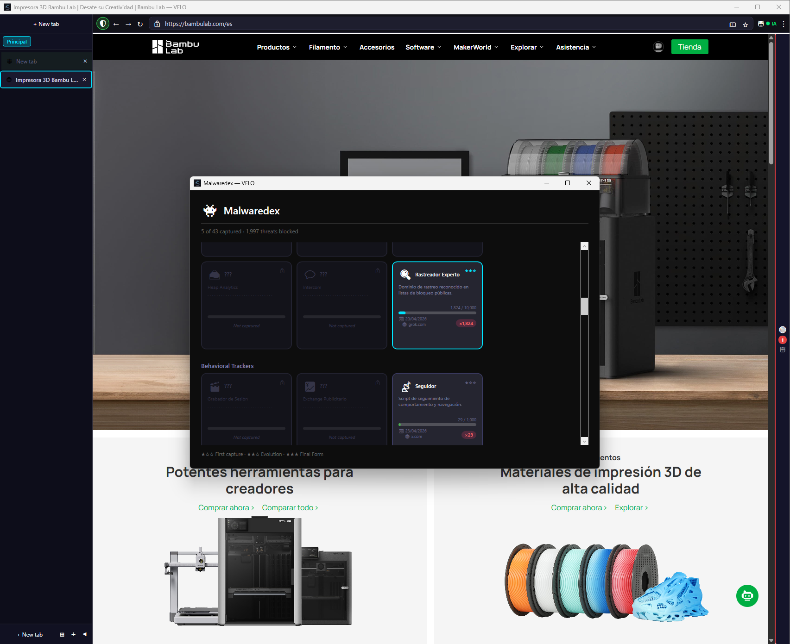
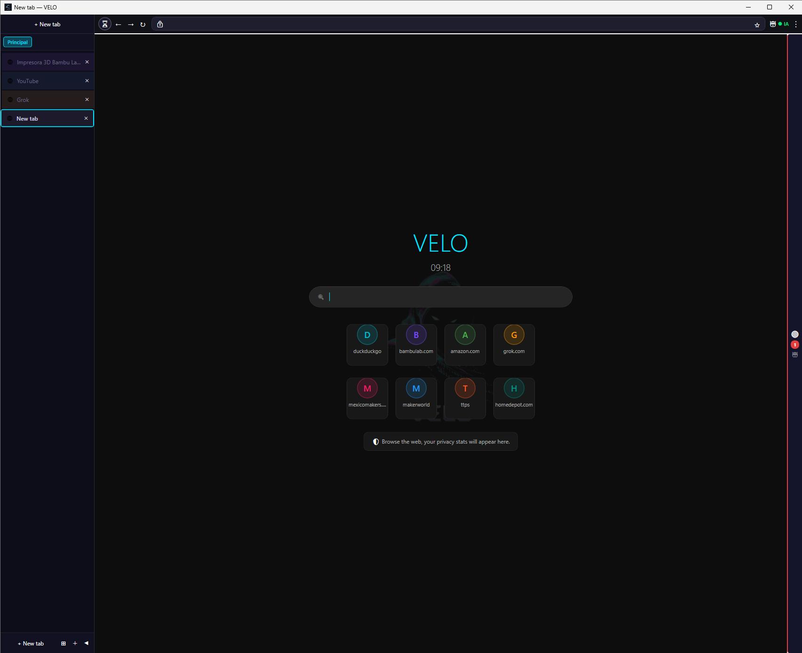
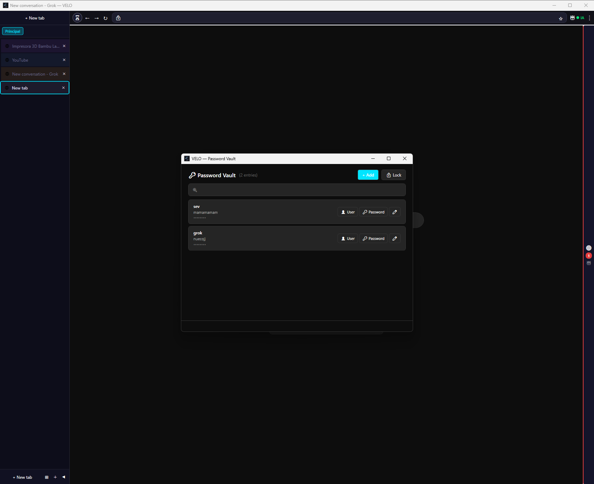
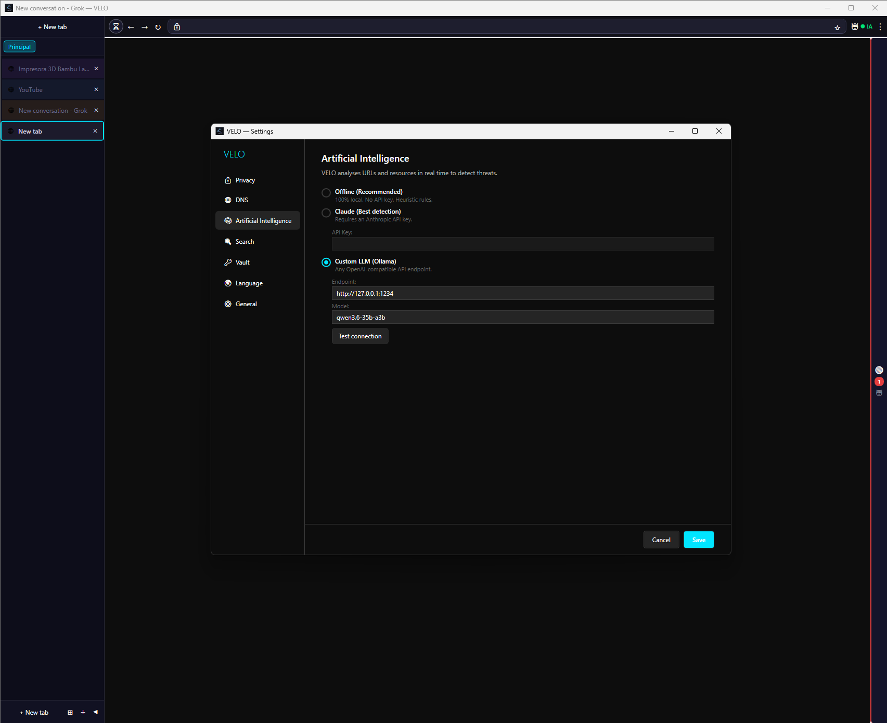

Zero telemetry. Optional local AI. Complete fingerprint protection.
Everything you need, nothing you don't.

Canvas, WebGL, AudioContext and hardware noise injection. WebRTC relay mode. Tracker blocker with 250+ domains updated automatically from EasyPrivacy.
Real-time security indicator (Red / Yellow / Green / Gold). Per-session privacy receipt with blocked trackers, TLS status, AI verdict and more.
Side-panel chat with local AI (LlamaSharp GGUF or Ollama / LM Studio). Sandboxed actions with user approval. Automatically feeds the Shield Score.
Isolate sessions by context. Banking mode with anti-capture protection. Auto-expiring containers for temporary sessions.
Press Ctrl+Shift+V to open the full inspector: TLS details, tracker list, AI verdict, fingerprint attempts, block reasons. Export as JSON.
Color-coded tab groups. Side-by-side split view. Tear off tabs to new windows. Command Bar (Ctrl+K) with fuzzy search.

Security Inspector — TLS, fingerprint protection, AI analysis, one keystroke away

Malwaredex — 43 threat types tracked and blocked across every site you visit

Vertical tab sidebar with workspaces — organize sessions the way you think
VeloAgent — your local AI assistant, always one click away

Password Vault — encrypted with your master password, never leaves your device

AI Settings — pick Ollama, LlamaSharp local, or bring your own Claude API key
Blocks drive-by downloads, executables and suspicious files before they land.
Stops popup storms, fake alerts and malicious redirects instantly.
Blocks malicious domains and verifies Certificate Transparency logs.
43 threat types classified across 6 categories, updated automatically.
RADICAL TRANSPARENCY
VELO has zero hidden network calls. The complete list of outbound connections fits on this page.
Once every 24 hours, VELO asks GitHub if a newer version exists. That's the only call enabled out of the box. Turn it off in Settings → Privacy and even that disappears. Verified updates use SHA256 checksum + manifest signature — no Authenticode required.
If you enable DoH, VELO routes DNS through Quad9 instead of your ISP. The browser never queries any other resolver. Off by default — your existing system DNS is used until you opt in.
By default the AI runs on your machine via LlamaSharp or Ollama on localhost. The Claude adapter is opt-in and uses YOUR API key — VELO has no shared key, no proxy, no telemetry. The agent's prompts and your conversations never reach our servers because we don't have any.
When you save a new password, VELO can ask Have-I-Been-Pwned if it's in any known breach. We send the FIRST 5 HEX CHARS of the SHA-1 hash. Not the password. Not the full hash. The server returns ~500 candidates and the comparison happens locally. Off by default.
Tracker, ad and malware lists are bundled with the installer. Optionally VELO refreshes them weekly from raw.githubusercontent.com (EasyPrivacy + Golden List + Malwaredex). The request is a plain GET; no cookies, no fingerprinting, no User-Agent shenanigans.
No analytics. No crash reports (planned, opt-in only). No ML telemetry. No "anonymous usage statistics." No vendor pings. No referral kickbacks. The source is on GitHub — verify it yourself.
Free. Open source. No account required.
Installs to Program Files, creates a desktop shortcut, registers as default browser.
VELO-v2.4.38-Setup.exeExtract and run directly from any folder or USB drive. No installation, no registry writes.
VELO-v2.4.38-portable.zipWindows may show a security warning
VELO is a new open-source app and doesn't yet have a commercial code-signing certificate. Windows SmartScreen may flag the installer. Click More info → Run anyway to proceed. You can verify the file with the SHA256 checksum on GitHub.
Requirements: Windows 10 (1903+) or 11 · x64 · 4 GB RAM (8 GB recommended) · WebView2 Runtime
All releases & checksums on GitHub →
Code signing in progress — verify integrity with the SHA256 checksum on GitHub Releases.